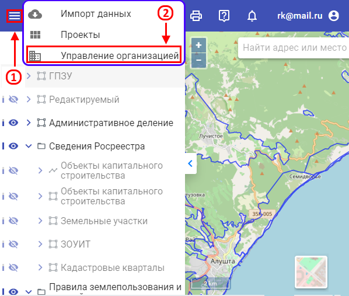
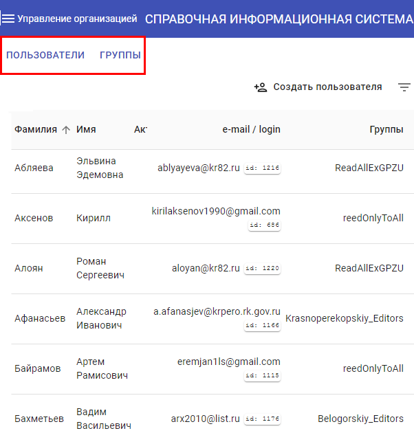
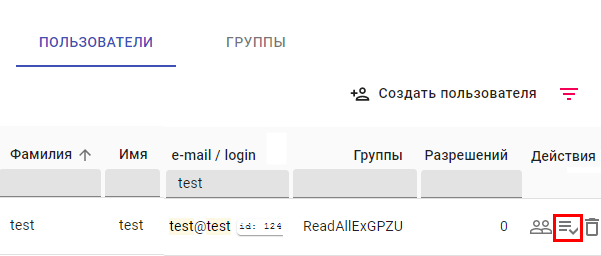
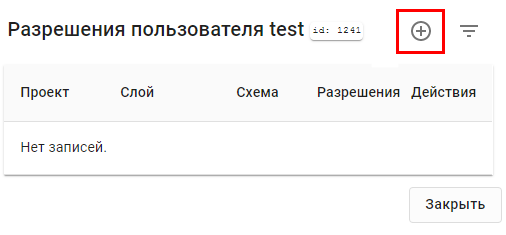
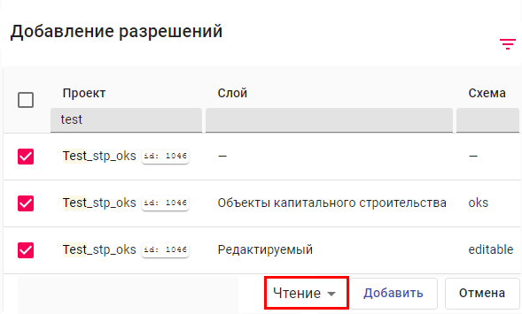
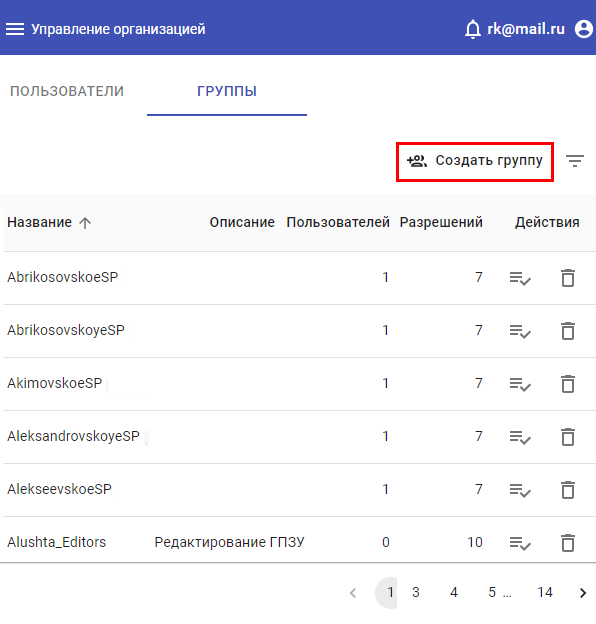
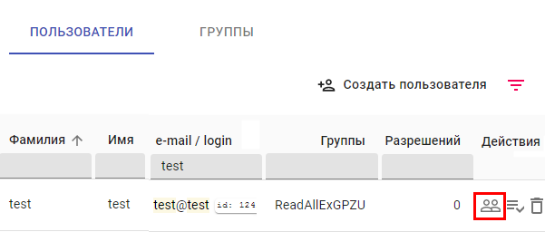

* Страница "Управление организацией" доступна только для пользователя с правами администратора.
Для разграничения прав на ресурсы необходимо:
-
Нажать кнопки «Меню» и «Управление организацией» в указанной последовательности.

Рис. 1. Переход к странице «Управление организацией»
-
На экране появится две вкладки «Пользователи» и «Группы».

Рис. 2. Управление организацией
-
Во вкладке «Пользователи» необходимо найти нужный. Справа от его имени будет выбор действий,
осуществляемых по отношению к его профилю. Необходимо выбрать разрешения.

Рис. 3. Переход к разрешениям
-
В появившемся окне нажать на кнопку «Добавить».

Рис. 4. Добавление разрешений
-
Сделать выбор слоев, к которым необходимо добавить разрешения. Для удобства поиска можно воспользоваться сортировкой,
которая позволяет отфильтровать все имеющиеся слои в системе по таким признакам, как: название проекта, слоя и схемы.
Возле выбранных данных необходимо поставить «галочку» и выбрать параметр разрешений. Это может быть чтение,
запись или владелец. Нажать на кнопку «Добавить». Кроме прав на слой, необходимо дать права на проект(ы), который
содержит в себе эти слои. Отличительной особенностью проекта в списке является отсутствие у него наименования слоя и
схемы.

Рис. 5. Добавление разрешений
-
Добавлять разрешения можно сразу же нескольким пользователям. Для этого необходимо на странице «Управление организацией»
перейти во вкладку «Группы» и создать новую.

Рис. 6. Создание группы пользователей
-
Вернуться во вкладку «Пользователи». Выбрать нужный профиль, нажать на кнопку «Группы», расположенную справа от него,
и добавить в ранее созданную группу.

Рис. 7. Добавления пользователя в группу
-
Добавить в эту группу всех пользователей, к которым необходимо присвоить разрешения.
-
Вернуться во вкладку «Группы». Выбрать нужную. Выполнить шаги 1-4.